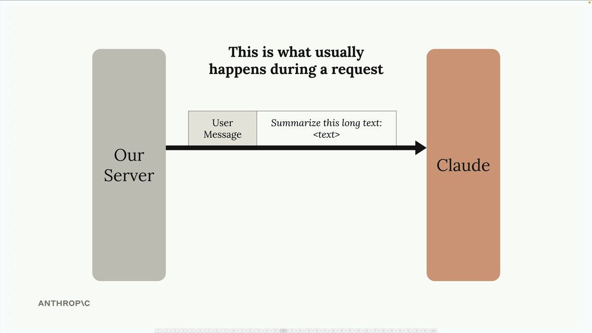
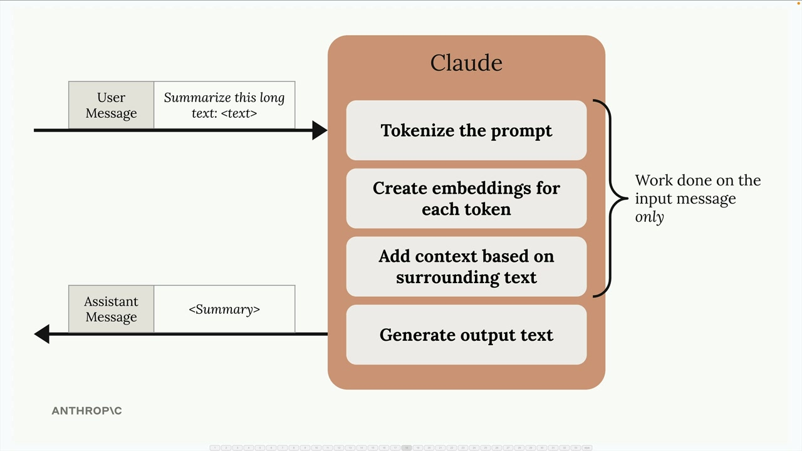
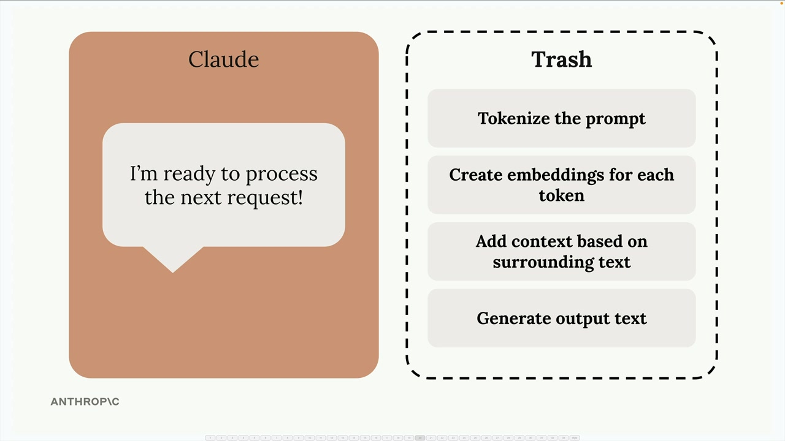
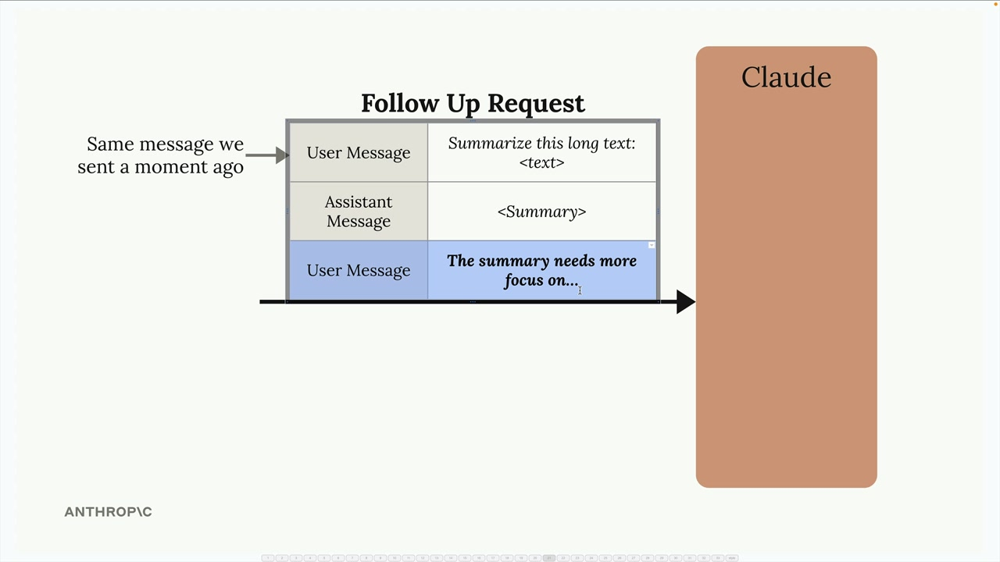
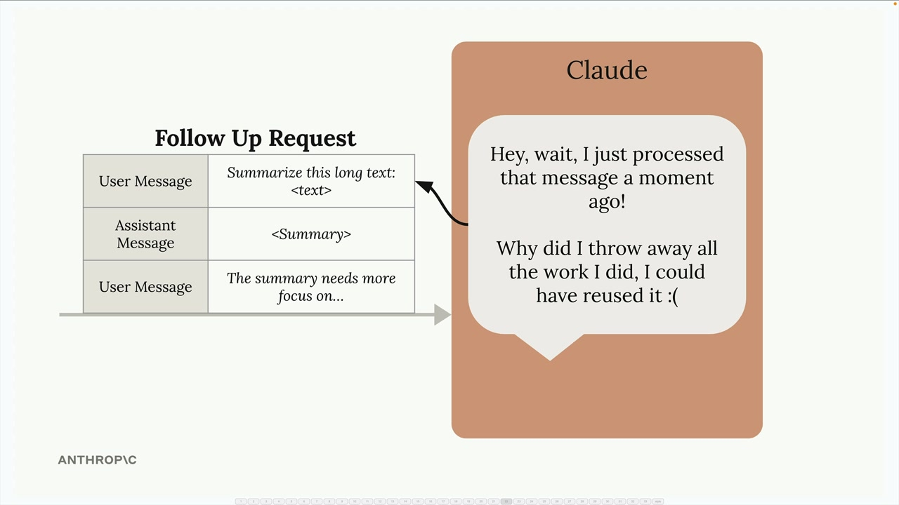
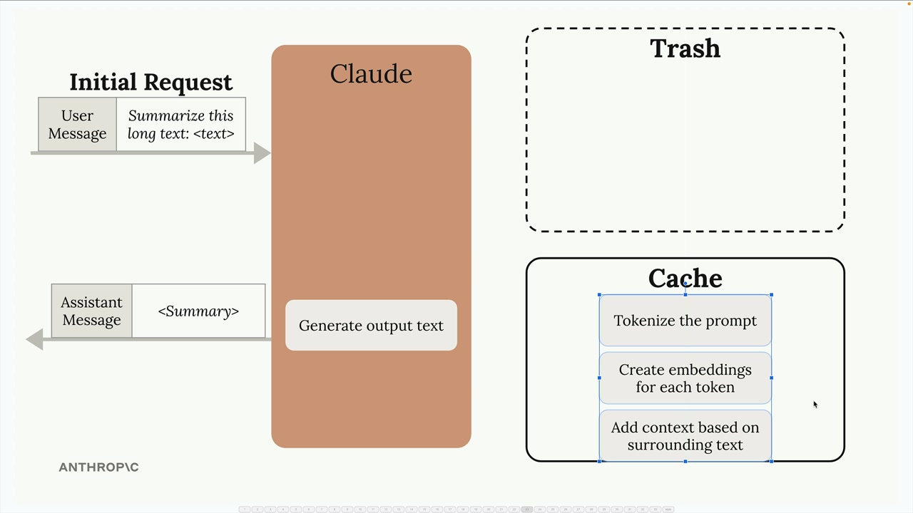
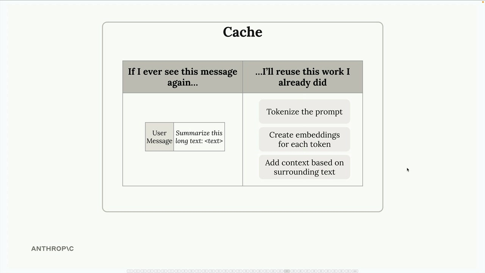
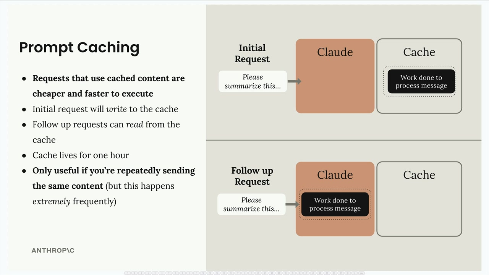

Prompt caching
Чему научитесь
Видео 3:35 и текст урока
К концу урока вы сможете:
- объяснить, какую работу Claude делает над входом до генерации;
- описать, как кеш переиспользует эту работу;
- назвать преимущества и ограничения prompt caching.
Видео и текст урока.
Смотреть урок на Skilljar Prompt caching · 3:35Prompt caching — возможность, которая ускоряет ответы Claude и снижает стоимость генерации, переиспользуя вычислительную работу из прошлых запросов. Вместо того чтобы выбрасывать всю работу по обработке после каждого запроса, Claude может сохранить её и использовать снова, когда вы пришлёте похожее содержимое.
Как Claude обычно обрабатывает запросы
Чтобы понять prompt caching, сначала посмотрим, что происходит в обычном запросе без кеша.

Получив сообщение, Claude не сразу начинает генерировать ответ. Сначала он проделывает огромную работу по предобработке входа:

- разбивает промпт на токены;
- создаёт эмбеддинги для каждого токена;
- добавляет контекст по соседнему тексту;
- и только потом генерирует сам текст ответа.
Отправив ответ, Claude выбрасывает всю эту вычислительную работу — токенизация, эмбеддинги и анализ контекста отправляются в мусор.

Почему выбрасывать работу — плохо
Это неэффективно, когда следующие запросы содержат то же самое. Например, в разговоре, где вы просите Claude доработать пересказ одного и того же длинного текста:

Claude приходится заново делать ту же предобработку содержимого, которое он только что проанализировал. Claude мог бы подумать: «Я только что обработал это сообщение и выбросил всю работу — а мог бы её переиспользовать!»

Как prompt caching решает проблему
Prompt caching меняет процесс: работа по предобработке сохраняется, а не выбрасывается.

При первом запросе Claude выполняет всю обычную предобработку, но сохраняет результаты в кеш, а не выбрасывает. Кеш работает как таблица поиска: «Если я снова увижу это сообщение, переиспользую уже сделанную работу».

Плюсы и ограничения

Преимущества prompt caching:
- более быстрые ответы: запросы с кешированным содержимым выполняются быстрее;
- ниже стоимость: за кешированные части запроса вы платите меньше;
- автоматическая оптимизация: первый запрос пишет в кеш, следующие — читают из него.
Но есть важные ограничения:
- срок жизни кеша: кешированное содержимое живёт только час;
- ограниченные сценарии: полезно, только если вы повторно отправляете одно и то же;
- нужна частота: эффективнее всего, когда одинаковое содержимое повторяется в запросах очень часто.
Prompt caching лучше всего подходит, например, для анализа документов, когда вы задаёте много вопросов по одному большому документу, или для итеративной правки, когда основное содержимое неизменно, а уточняются отдельные аспекты.
Дальше
Следующий урок — правила: точки кеширования, порядок частей запроса и минимальный размер.
Оригинал урока: Prompt caching.